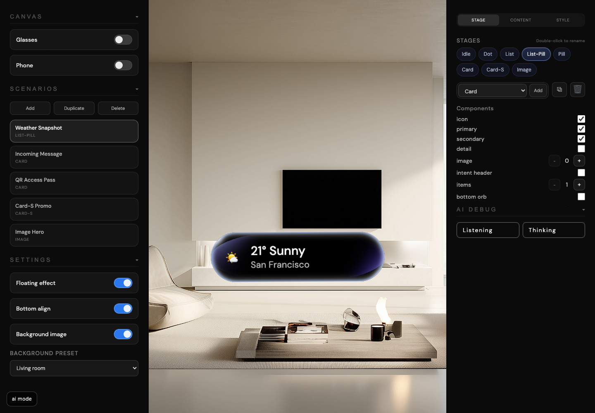
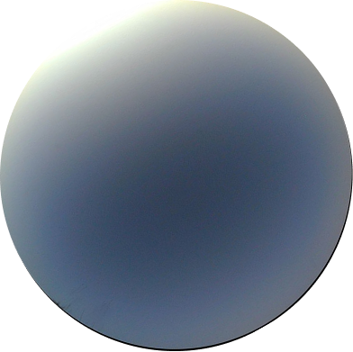

Surface Model
3
Prototype editor, AI interaction shell, and Bubble demo share one motion vocabulary.
GenUI is a browser-native generative UI project for designers. It treats interface states like living transitions instead of fixed screens: prototype, listening, thinking, pill, list, card, bubble field, and AI flow all become editable behavior.
GenUI reframes interface work around transitions, behavioral stages, and editable interaction shells. Rather than shipping one canonical screen, it asks how an interface should compress, listen, think, split, reveal, and return.
The project is less about drawing UI and more about giving UI a body language.
Conventional assistants move from idle to loading to result with generic containers and generic timing. GenUI explores what happens when those states become distinct, inspectable interface materials.
Listening, thinking, confirming, and acting often reuse one blunt surface. That makes the interface understandable, but rarely expressive.
Many transitions animate, but few explain what the system is now doing. GenUI treats motion as information, not just polish.
Prototype surfaces, AI shells, and showcase demos usually drift apart. This project deliberately forces them to share geometry and behavior.
The project is organized into three environments. Each one tests a different angle of the same question: how should generative interface states feel when they are visible, interruptible, and designable?
The prototype page is where shapes, copy, icons, list states, listening prompts, and thinking behaviors are tuned directly. It makes motion a first-class design parameter, not a final pass.

Stage transitions are tuned down to text crossfades, icon treatment, divider behavior, and shell width interpolation.

Reasoning is visible through a shared orb-to-pill stream component that can shift between verbs, agents, domains, and app contexts.

The environment is part of the interaction. Background image, blur, framing, and shell material are all adjustable because context changes perception.
AI mode focuses on input routing, voice, TTS, and flow-specific interface states such as compose, disambiguation, confirm, sending, and sent. It is where the interaction model gets pressure-tested as a real assistant shell.
The Bubble page extends the same motion language into a radial field. The home orb, promoted bubbles, child chips, and earcons push the system toward a more spatial, tactile selection model.
The implementation is detailed, but the design stance is simple: state should be legible, shared components should stay shared, and interface motion should carry meaning.
When listening and thinking are related, they should share the same structural container. This keeps transitions smooth and prevents visual forks from turning into product forks.
Crossfade versus swipe, pill versus circle, reveal versus confirm: each motion choice signals a different system intention. Timing is treated as language.
Reasoning appears as a visible interface state with its own icon logic, looping text, minimize behavior, and return path into standard surfaces.
No framework, no build step, no abstraction maze. The browser remains the primary medium, which keeps motion tuning and asset iteration immediate.
GenUI stays deliberately light at the infrastructure level. The complexity lives in shared morphing logic, surface-specific renderers, scenario data, and local interaction modules.
The project can move fast because the architecture stays narrow. Most of the interesting work happens in surface behavior and design tuning, not in app scaffolding. That is the right trade for a motion-heavy interaction lab.
The current build already behaves like a serious interaction prototype. The next layer is less about adding more screens and more about strengthening continuity across behavior, authoring, and evaluation.
Turn interaction sounds like hover, confirm, reveal, and spread into a clean shared asset and trigger model across all surfaces.
Package scenario states, timing parameters, and asset links in a portable format so motion studies can be shared without hand-transfer.
Expand beyond assistant basics into multi-step flows where visible stage changes are more consequential than a static response card.
Connect scenario editing more directly to designer workflows so these stateful interactions can move between prototype and production more cleanly.
Its most important contribution is not a single screen. It is the insistence that listening, thinking, revealing, confirming, and collapsing can all be designed as first-class interface moments.
Browser-native generative UI tool for designers with prototype, AI, and Bubble surfaces built around shared morphing behavior and editable interaction states.